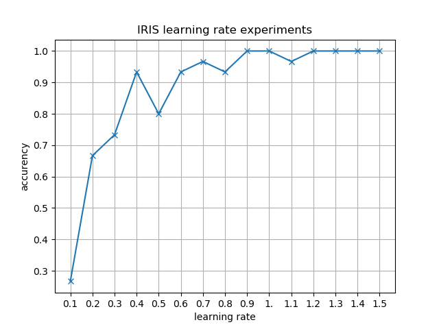
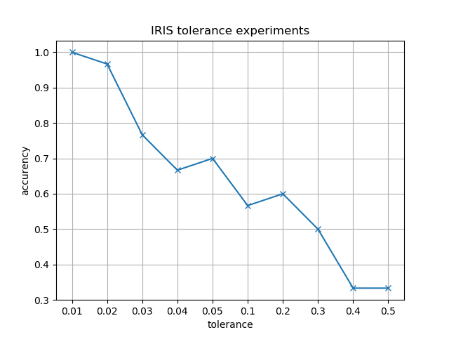
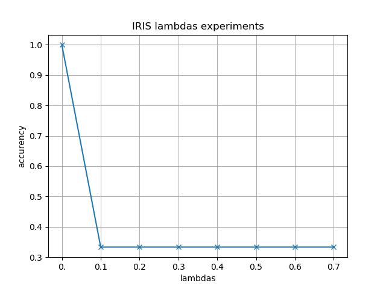
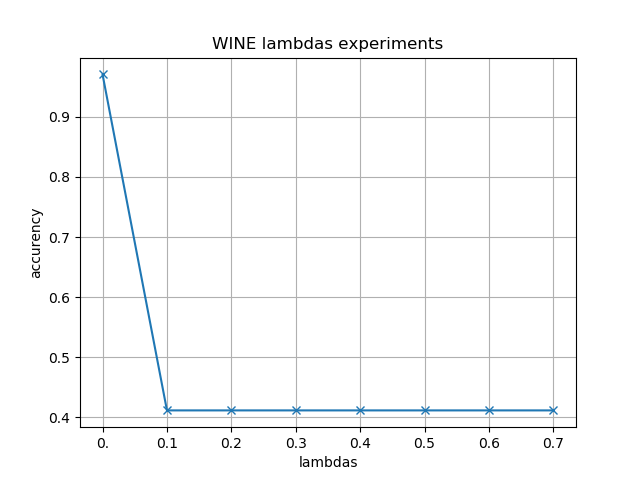
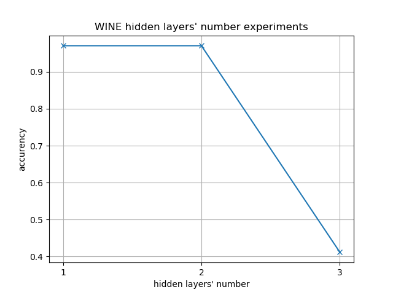

The two datasets selected from UCI are IRIS and WINE.
The IRIS is a classic dataset with 4 numeric attribute,
,containing 3 classes of 50 instances each, where each class refers to a type of iris plant.
The WINE are the results of a chemical analysis of wines grown in the same region in Italy but derived from three different cultivars. The analysis determined the quantities of 13 constituents found in each of the three types of wines. All attributes are continuous.
For both categorical and numeric data, Max-Min Scale is used to restrict values into [0, 1]. The reason is that the ranges of
numeric data are much different from each other, in this case the initial value of weight matrix W and bias b may inflect the result of
logistic regression.
There are three source code files in soucecode folder. They are dataprocess.py, full_connected_nn.py and experiments.py.
The code in this file is used to read data from iris.data and wine.data in dataset folder and dump these data into json format based on their labels.
The code in this file implements a fully connetected neural network. Users can pass the structure of neural network and any activation function they want into this model. In this file, I supply the implements of sigmod function and its derivative function as default activation function. The implements of backpropagation is based on this tutorial from stanford
The first method is init, as following:
def __init__(self, layer_sizes, activation_func, derivative_func, \
tol=1e-3, normal_random_scale = 0.5):
'''
init function of Fully Connected Neural Network
@layer_sizes: np.ndarray, shape=(n,) where n>=2
@active_func: callable, activation function
@derivative_func: callable, derivative function
@tol: float, tolerance to stop the gradient descent
'''
self._layer_sizes = layer_sizes
self._w_mats = []
self._b_mats = []
self._act_func = activation_func
self._der_func = derivative_func
self._tol = tol
self._fitted = False
self._normal_random_scale = normal_random_scale
The layer_sizes is the structure of NN, active_func and derivative_func are active function and its derivative function. tolis the tolerance which is the stop critirion of iterations in backpropagation. normal_random_scal is the value of scale in Normal Distribution which is used to init the weight matrix. self._w_mats is used to store the weight matrixs and self._b_mats for bias.
The training method is fit(self,X,Y, alpha, lamb), where X is attributes of training data and Y is label vectors of X. alpha is the learning rate and lamb is the factors of regularization items.
First, weight matrixs and bias are inititalized by init method using np.random.normal function. Then the code steps into backpropagation part.
step_w_mats = [
np.matrix(np.zeros((self._layer_sizes[i+1], self._layer_sizes[i]))) \
for i in xrange(self._layer_sizes.shape[0]-1)
]
step_b_mats = [
np.matrix(np.zeros((self._layer_sizes[i+1], 1))) \
for i in xrange(self._layer_sizes.shape[0]-1)
]
step_w_mats and tep_b_mats are used to store the step of gradient descents. They are both initialized to zero. Then for each records x in X, backpropagation is processed. The forward part is shown as follows:
z_vecs = [x]
a_vecs = [x]
#forward
for l in xrange(self._layer_sizes.shape[0]-1):
z_vecs.append(self._w_mats[l]*a_vecs[l]+self._b_mats[l])
a_vecs.append(self._act_func(np.array(z_vecs[l+1])))
z_vecs and a_vecs stores the inputs and activate values of nerons in layers. The loop above is the forward propagation to evaluate z_vecs and a_vecs.
#loss
tmp_loss += ((y-a_vecs[-1]).T*(y-a_vecs[-1])/2)[0,0]
#backward
residual_errors = [ np.multiply(self._der_func(z_vecs[-1]), a_vecs[-1]-y) ]
step_w_mats[-1] += residual_errors[-1] * a_vecs[-2].T
step_b_mats[-1] += residual_errors[-1]
for i in xrange(len(self._w_mats)-1, 0, -1):
re = np.multiply(self._w_mats[i].T * residual_errors[0], \
self._der_func(np.array(z_vecs[i])))
residual_errors.insert(0, re)
step_w_mats[i-1] += residual_errors[0] * a_vecs[i-1].T
step_b_mats[i-1] += residual_errors[0]
Above code is the logic of backward propagation. Here residual error matrixs are calculated based on that of the next layer. Details of algorithm and provement can be found in http://ufldl.stanford.edu/wiki/index.php/Backpropagation_Algorithm.
The follwing code updates the weight matrix and bias vectors, and decided whether to stop the iterations.
for i in xrange(len(self._w_mats)):
self._w_mats[i] -= alpha*( step_w_mats[i]/X.shape[1] \
+ lamb*self._w_mats[i] )
self._b_mats[i] -= alpha*( step_b_mats[i]/X.shape[1] )
#check whether to stop the iteration
if np.abs(last_loss-tmp_loss) <= self._tol:
break
else:
last_loss = tmp_loss
And the predict(self, X) method is for predictions. Its logic is as same as that of forward propagation in fit method.
Experiments code is in this file. Experiments in different scale, tol, learning_rate and lambda, which is the factor of regularization items.
In the experiments, I try to find out relations between scale, torlerance, learning rate, facotrs of regularizations, structures and accurency. The following figures are the results of these experiments.
In learning rate experiments, tolerance is 0.01, scale is 0.4 and the facotr of regularization item is 0.

Observing above figures, it can be seen that with the increasement of learning rate, accurency goes up, too. That maybe because when the learing rate is small, the gradient descent reached a local optimization. When learning rate becomed bigger, the iterations jump out of the local optimizations and reached the global optimization.
In tolerance experiments, learning rate is 0.9, scale is 0.4 and the facotr of regularization item is 0.


Accurencies in two figures both go down with the increasement of tolerance, which means that a result with big tolerance may not be a best result. In the another hand, though a small tolerance can lead to a better result, it will make the convergence too time-consuming.
In scale experiments, learning rate is 0.9, tolerance is 0.01 and the facotr of regularization item is 0.


A bigger scale leads to a better result in both figures. I guess that's because when the initializations are too close to zero, iterations will goto a local optimization.
In scale experiments, learning rate is 0.9, tolerance is 0.01 and scale is 0.4 .
 
Regularization items are used to prevent overfitting. Due to the data sizes of IRIS and WINE are both small, so their is little chance to overfit when training. So a higher factor leads to a worse accurency.
In this part of experiments, learning rate is 0.9, tolerance is 0.01, scale is 0.4 and factor of regularization item is 0.
There is only one hidden layers. Note the size of attributes as A, the size of the hidden layers begins at A-2 and ends at A+5.
The size of IRIS attributes is 4. When the hidden layer size is 2, the accurency of left figure is around 0.3, which is pretty low. With the increasement of size, the accurency goes up sharply. For WINE dataset, the accurency is always high. It's obvious that a too small hidden layer size can not meet the requirements, but it do not need to be too large.
In this part of experiments, learning rate is 0.9, tolerance is 0.01, scale is 0.4 and factor of regularization item is 0.
There is only one hidden layers. Note the size of attributes as A, the sizes of the hidden layers are A+2. The numbers of hidden layers begins at 1 and ends at 3

Above results show that the accurencies go down with the increasement of hidden layers' number. So it is not true that the more hidden layers can lead to better results.